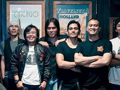

STORY DEWA 19
Dewa 19 merilis empat album studio bersama Ari, yaitu Dewa 19 (1992), Format Masa Depan (1994), Terbaik Terbaik (1995) dan Pandawa Lima (1997), dan melahirkan lagu-lagu hit seperti "Kangen", "Aku Milikmu", "Cukup Siti Nurbaya", "Cinta Kan Membawamu Kembali", "Kirana", "Kamulah Satu-Satunya", dan "Elang". Setelah posisi Ari digantikan oleh Once pada tahun 1999, karier Dewa 19 justru semakin melejit dengan dirilisnya album Bintang Lima (2000) dan Cintailah Cinta (2002), yang masing-masing terjual lebih dari satu juta keping. Once merekam dua album penuh lainnya yaitu Laskar Cinta (2004) dan Republik Cinta (2006). Lagu-lagu hit yang lahir di era Once meliputi "Roman Picisan", "Risalah Hati", "Separuh Nafas", "Arjuna", "Pupus", "Pangeran Cinta", "Larut", dan "Dewi".
-
Terbentuknya Band Dewa19
Dewa pertama kali dibentuk oleh empat orang siswa SMP Negeri 6 Surabaya. Pada tahun 1985 band ini awalnya bernama "Booster". Kemudian setahun berselang pada 26 Agustus 1986, nama Dewa tercetus. Nama Dewa merupakan akronim mereka berempat: Dhani Ahmad (kibor, vokal), Erwin Prasetya (bas), Wawan Juniarso (drum), dan Andra Junaidi (gitar) mereka memiliki markas tempat berlatih di rumah Wawan di Jalan Dharmawangsa Dalam Selatan No. 7, yang terletak di komplek Universitas Airlangga.
-

Keistimewaan Band Dewa 19
5 Alasan Band Dewa 19 Pantas Dianggap Legendaris, Karyanya Tak Lekang Ditelan Zaman 1. Inovasi musik Dewa 19 adalah salah satu band yang dikenal karena inovasi dalam musik. 2. Karier yang panjang Dewa 19 telah berkarir selama lebih dari dua dekade. 3. Lagu-lagu hits Dewa 19 dikenal dengan lagu-lagu hits mereka yang menjadi legenda di Indonesia. 4. Pengaruh pada generasi muda Dewa 19 sangat berpengaruh pada generasi muda di Indonesia. 5. Formasi yang konsisten.